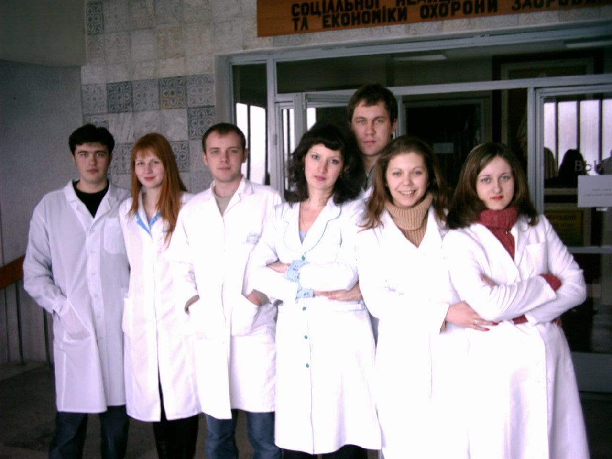
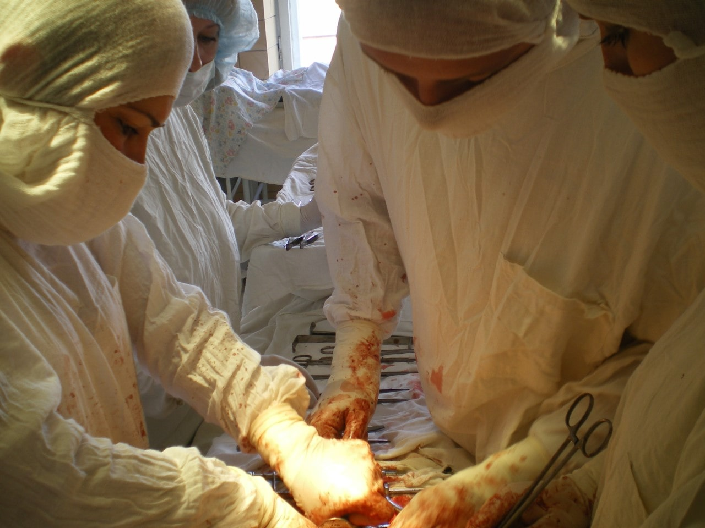
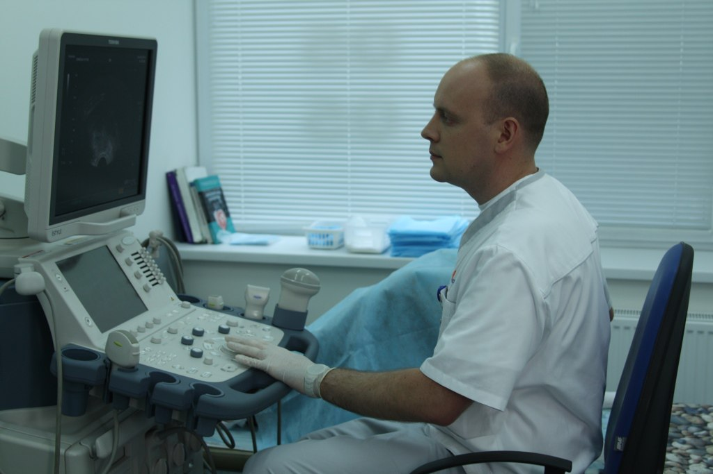
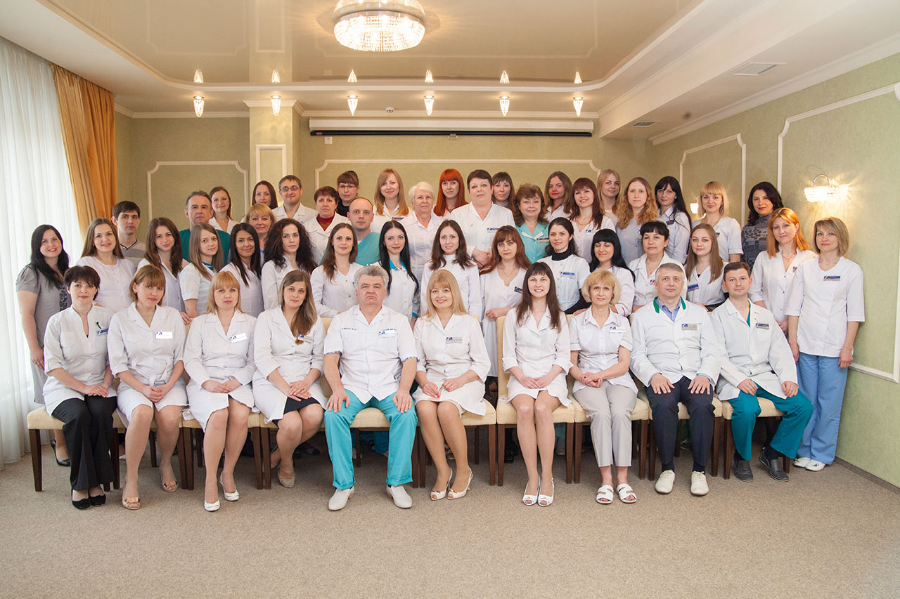
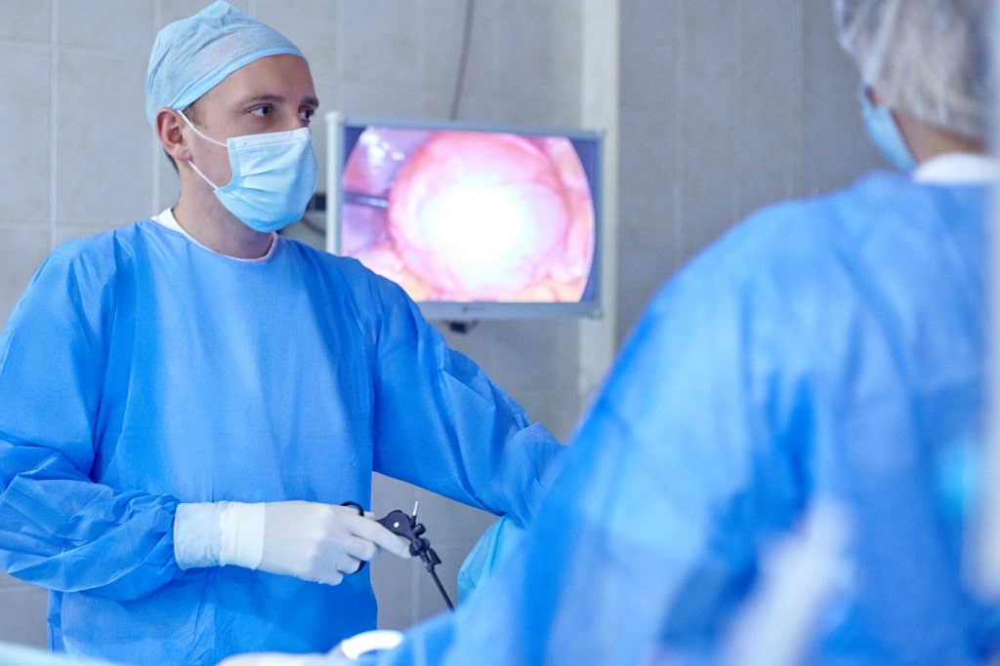

Навчання і кар'єра

Перше знайомство з медициною почалося в 1997 після вступу до Луганського медико-біологічного ліцею, який закінчив у 2000 році. За час навчання в ліцеї майбутній доктор, ще не знаючи, що пов'яже своє життя з акушерством і гінекологією, активно вивчав біологію та хімію. Брав участь у всеукраїнських олімпіадах з хімії: в 1998 році в командній олімпіаді зайняв 5 місце, в 1999 - 7 місце.
З 2000 по 2006 рік навчався в Луганському медичному університеті. Під час навчання з 2003 по 2006 рік працював на посаді медичної сестри в Луганській обласній психоневрологічній лікарні.
З 2006 по 2009 рік пройшов інтернатуру з акушерства та гінекології на базі Луганської обласної клінічної лікарні.
У 2008 році, у зв'язку з нестачею кадрів, працював єдиним акушером-гінекологом Новоайдарського району Луганської області, виконував роботу районного акушера-гінеколога, одночасно будучи лікарем гінекологічного та акушерського стаціонару, ведучи амбулаторний прийом в поліклініці і працюючи на ургентній ставці в нічний час.
З 2009 року по 2014 роки працював на посаді лікаря акушера-гінеколога з надання невідкладної допомоги в гінекологічному відділенні Луганської міської багатопрофільної лікарні №2, з 2013 року - відповідальним лікарем на зміні.
З 2010 по 2011 роки додатково працював в м. Луганськ в приватній лікарні «Медаком», вів амбулаторний прийом, займався веденням вагітності, лікуванням безпліддя, запальних процесів малого таза, лікуванням порушень менструального циклу.
У 2010 році пройшов навчання на курсі ТУ «Ендоскопічна хірургія» на базі Донецького національного медичного університету ім. Н. Горького.
У 2011 році прослухав лекції і здав залік по «клінічної трансфузіології та профілактиці пострансфузіонніх ускладнень» на базі Луганської обласної станції переливання крові.
У 2011 році отримав 2 категорію за спеціальністю «акушерство і гінекологія».

З 2011 по 2012 роки працював за сумісництвом в пологовому відділенні Луганської обласної клінічної лікарні черговим акушером-гінекологом в нічний час, приймав пологи, робив кесарів розтин.
З 2011 по 2014 роки працював в приватній клініці «Нові медичні технології» в Луганську лікарем гінекологічного стаціонару. У клініці оволодів ендоскопічною спеціальністю. Почав виконувати лапароскопічні, гістероскопічні операції.
З 2014 року лікар-спеціаліст за спеціальністю «Ультразвукова діагностика».

Робота та навчання в м. Харків

З 2014 по 2016 рік працював лікарем операційного блоку в ЕКО центрі професора Феськова О.М. ®, м. Харків.
У клініці, крім хірургічного лікування безпліддя, активно займався лікуванням ендометріозу тазових органів і лейоміоми матки. Проводив лапароскопічне видалення вузлів тіла матки, лапароскопічні екстирпації при гігантських міомах матки, займався хірургічною корекцією опущення тазових органів і нетримання сечі.
У 2015 році пройшов навчання на курсі ТУ «Кольпоскопія в діагностиці передпухлинних і пухлинних станів шийки матки» на базі Харківської медичної академії післядипломної освіти.
У 2015 році отримав 1 категорію за спеціальністю «акушерство і гінекологія».
Робота та навчання в м. Київ
З 2016 року завідує стаціонарним відділенням оперативних втручань медичного центру «Омега-Київ».
З 2018 року лікар-спеціаліст за спеціальністю «Онкогінекологія».
З 2019 року член ESGE (European Society for Gynaecological Endoscopy).

У 2020 році отримав вищу категорію за спеціальністю «акушерство і гінекологія»
У сферу професійних інтересів доктора входить лікування безпліддя, ендометріоза, лейоміоми матки, патологічних процесів в порожнині матки, опущення статевих органів і хірургічна корекція нетримання сечі, косметична пластика статевих губ.
Станіслав Олександрович успішно проводить лапароскопічні операції при гігантських фіброміомах, пухлинах додатків матки. Проводить лапароскопічне видалення фіброматозних вузлів на матці різних розмірів і локалізацій.
При лікуванні ендометріозу доктор дбайливо ставиться до тканини яєчника, видаляє кісти з максимальним збереженням здорової яєчникової тканини і максимально видаляє поширення ендометріозу по очеревині малого тазу.


{kind=link}
{kind=link}